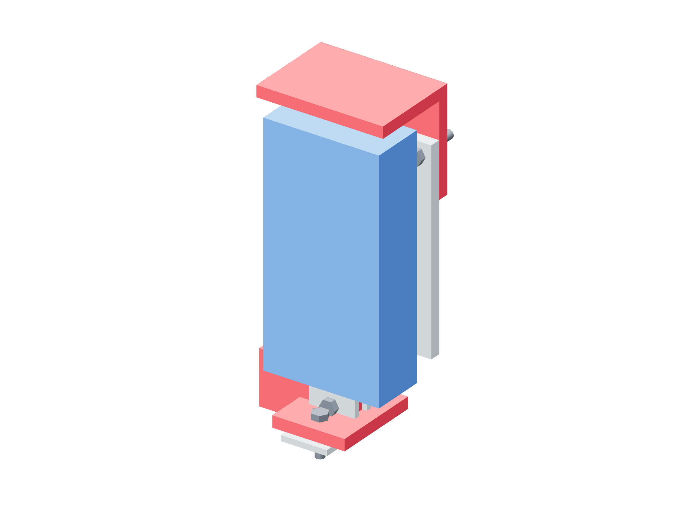

Preparation / hub qualification38 / 179
Mount the proof gauge under the quill
The gauge points down onto the saddle. A metal angle cap receives the quill load and the rear mounting screws retain the gauge body; the drill motor stays unplugged.
Add500 N gauge · 70 × 110 backing · four 7 mm spacers / M4 rear screws · proof-gauge-quill-cap · two M5 × 25
Tools / setupUnplugged drill press · metal vise support · depth check · force calibration / uncertainty record

- Fit four 7 mm rear spacers and the dedicated proof set of four M4 × 25 screws, with its eight large washers. Finish to actual socket depth; keep the shorter ordinary-backing set separate.
- Attach the cap to the backing with two M5 × 25 bolts. Verify all heads/spacers clear the received case; no quill force touches its plastic enclosure.
- Center the quill on the horizontal cap leg and the downward M6 compression probe on the saddle, with force tangential to the lever.
- Tare and check the gauge, record total force/alignment/radius uncertainty and verify every noncontact catch before advancing the quill.
Ready when
The complete force path is quill → metal cap → gauge load cell/probe → metal saddle → proof lever, with no bypass contact. A loaded case, skewed probe, uncertain force bound or fixture contact fails this setup. Unload and correct it before torque qualification.